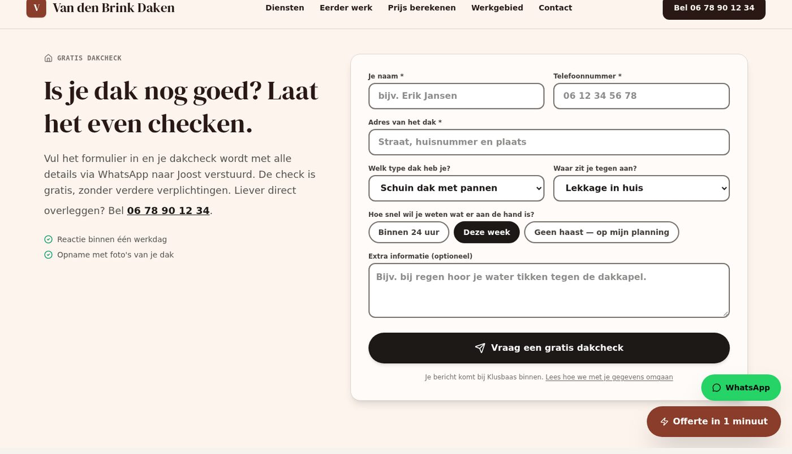
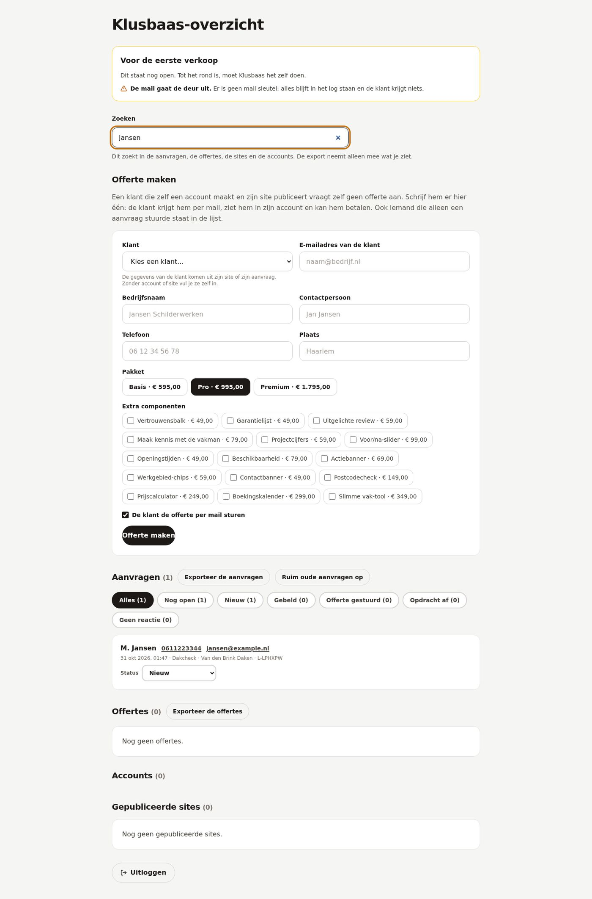

Waar het staat
In de map Lavish/ in de repository. Per PR een map met een
index.html, plus assets/style.css en
assets/app.js die alle pagina's delen.
Per pull request staat hier wat er verandert, in welke bestanden, welke proeven het bewaken en wat het níet doet. Geen marketingverhaal: wat er in de code gebeurt, en waarom.
De site in beeld
Deze pagina's vertellen wat er in de code gebeurt. De foto's hieronder laten zien wat de bezoeker daarna te zien krijgt. Klik op een foto om hem groot te bekijken.




Let op De foto's in deze schermafbeeldingen zijn lokale plaatshouders. De site zelf laadt zijn foto's van Unsplash; in de sandbox is die dienst niet bereikbaar. Wat je hier ziet is de echte opmaak en de echte tekst.
De PR's
Elke PR-pagina laat nu zien wat de bezoeker te zien krijgt: een schermafbeelding van de gebouwde site, in een frame, klikbaar voor een grote weergave. Plus een lichte en donkere modus en een voortgangsbalk.
Een aannemer verkoopt een bouw, geen kozijnen: eigen diensten, eigen prijzen, eigen foto's en vijf stappen in de tijdlijn — van de opname en de vergunningen tot de oplevering met de documenten.
De stappen van "van aanvraag tot oplevering" stonden in het component. Ze staan nu per vak in de gegevens, zodat de aannemer straks zijn eigen stappen kan krijgen — met woorden die bij zijn vak passen.
De achtste tool, bij het zevende vak: de bezoeker kiest het werk, de grootte van de tuin en het moment, en krijgt meteen een indicatie uit de eigen prijzen van de hovenier.
Eén zoekveld over de aanvragen, de offertes, de sites en de accounts, een export naar Excel, en een geplande functie die de aanvragen ouder dan twaalf maanden opruimt — precies zoals de privacyverklaring belooft.
Een knop in /mijn-account met wachtwoord en bevestiging. Sites,
foto's, aanvragen en onbetaalde offertes gaan; betaalde offertes blijven
anoniem als fiscal record.
Hoe het werkt
In de map Lavish/ in de repository. Per PR een map met een
index.html, plus assets/style.css en
assets/app.js die alle pagina's delen.
Wat er verandert, hoe het eruitziet, de bestanden, de proeven en "eerlijk": wat deze PR níet doet. Die laatste rubriek is de belangrijkste.
Uit de PR zelf: het diff-bestand, de proeven die erbij kwamen en de tekst uit de roadmap. Niets wat er niet staat.